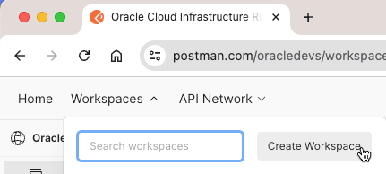

14.2.5 Postman - Oracle Cloud Infrastructure REST APIs 호출하기
Oracle Cloud Infrastructure REST API는 REST Client를 사용해서 호출할 수 있습니다. 대표적인 많이 사용하는 클라이언트 툴로, Postman, Insomnia 등이 있지만, Postman의 경우, Oracle Developers 커뮤니티에서 Oracle Cloud Infrastructure (OCI) REST API 목록을 Postman에서 바로 사용할 수 있는 워크스페이스 형태로 사전 등록하여, 제공하고 있습니다. REST API들이 모두 등록되어 있고, 인증처리에 필요한 스크립트도 기본 설정되어 있어, 호출을 위한 인증정보만 업데이트 해주면 되기 때문에 사용하기 편리합니다. 그래서 여기서는 Postman에서 이를 활용하여, OCI REST API들을 호출하는 방법을 알아봅니다.
-
OCI API Reference and Endpoints
-
Postman - Oracle Developers
Postman에서 OCI REST API REST APIs 호출하기
-
Postman에 접속하여 로그인합니다.
-
새 워크스페이스를 만듭니다.

-
아래 정보로 사용할 워크스페이스를 생성합니다.
- template: Blank workspace
- Name: Oracle Cloud Infrastructure REST APIs
-
Oracle Developers 커뮤니티에서 이미 등록하여 공개한 Oracle Cloud Infrastructure REST APIs 목록을 사용하기 위해 아래 주소로 접속합니다. 왼쪽 목록에서 보듯, 서비스별로 Collection형태로 OCI REST APIs를 제공하고 있습니다.
https://www.postman.com/oracledevs/workspace/oracle-cloud-infrastructure-rest-apis/overview
-
이중에서 사용할 API Collection을 포크합니다. 여기서는 첫 테스트를 위해 Object Storage Service API를 포크합니다.
-
앞서 만든 자신의 워크스페이스(Oracle Cloud Infrastructure REST APIs)로 포크합니다. 환경변수가 정의된 OCI Credentials도 함께 포크합니다.
-
환경 변수에서 OCI Credentials을 클릭합니다.
-
옆 아이콘을 클릭하여, 환경변수값 보기창을 엽니다.
-
OCI REST API를 사용하기 위해서는 위에서 보이는 OCI Credentials의 아래 값들이 필요합니다.
- tenancy_ocid: OCID of your tenancy.
- user_ocid: OCID of the user calling the API.
- fingerprint: Fingerprint for the public key that was added to this user.
- private_key: Contents of the private key file.
- passphrase: Optional passphrase used for the key. Only required if it key is encrypted.
- region: An Oracle Cloud Infrastructure region.
-
OCI Credentials 얻기 위해 대상 Cloud Account에 로그인하여, 로그인한 User에 API key를 등록해야 합니다.
-
API key 생성 등록하기
-
OCI 콘솔 로그인 > 오른쪽 상단 프로필 > My profile 클릭
-
My profile > 왼쪽 아래 Resources > API keys 클릭
-
Add API key 클릭
-
API 키 쌍을 생성하거나, 이미 가지고 있는 API 키 쌍이 있는 경우 Public Key를 등록하면 됩니다. 여기서는 편의상 Generate API key pair를 클릭하고, private key와 public key를 다운로드 받습니다.
-
Add를 클릭하여, API key를 추가하면, 다음과 같이 팝업이 뜹니다.
-
위 내용에서, 순서대로 user_ocid, fingerprint, tenancy_ocid, region 값을 복사해 사용합니다.
-
passphrase: 옵션값으로, API 키 쌍을 다른 툴을 통해 별도 생성시 passphrase을 입력한 경우, 그 값을 사용합니다. OCI 콘솔에서 생성한 API 키 쌍을 생성에는 이 값은 없습니다.
-
-
-
Postman 화면으로 돌아갑니다.
-
API key 생성시 확인한 값 tenancy_ocid, user_ocid, fingerprint, tenancy_ocid, region을 OCI Credentials의 각 항목에 입력합니다. 다운로드 받은 API Key의 Private Key파일을 텍스트 보기 툴로 열어 텍스트를 private_key에 그대로 복사합니다.
-
포크한 Object Storage Service API 중에서 제일 간단한 조회인 GET Namespace Name을 선택후, Send를 클릭하여 호출합니다.
-
아래와 같이 같이 조회되는 것을 확인할 수 있습니다. Object Storage의 Namespace Name가 잘 조회되는 것을 확인할 수 있습니다.
예시 #1, Compartment 관리
API Reference and Endpoints 설명에 따라 Compartment는 Identity and Access Management Service API로 Compartment를 관리할 수 있습니다.
Identity and Access Management Service API
Home Region
다음 IAM 자원은 Home Region에서만 생성되고 업데이트할 수 있습니다. 환경변수 OCI Credentials의 region을 Home Region으로 변경후 아래 테스트를 진행합니다. Home Region에 대한 설명은 아래 공식 문서를 참조합니다.
-
Users, Groups, Policies, Compartments, Dynamic groups, Federation resources
-
https://docs.oracle.com/en-us/iaas/Content/Identity/Tasks/managingregions.htm#The
When you use the API to update your IAM resources, you must use the endpoint for your home region. (See What is the tenancy home region? How do I find my tenancy home region?) IAM automatically propagates the updates to all regions in your tenancy.
#1. Postman에서 Compartment 목록 조회 - ListCompartments
-
Oracle Developers의 Oracle Cloud Infrastructure REST APIs 워크스페이스로 이동합니다.
https://www.postman.com/oracledevs/workspace/oracle-cloud-infrastructure-rest-apis/overview
-
Identity and Access Management Service API Collection을 자신의 워크스페이스로 포크합니다.
-
환경변수 OCI Credentials는 이미 포크하였으므로, 여기서는 포크하지 않습니다.
-
API 목록에서 compartments 하위에 있는 ListCompartments를 선택하고, Send를 클릭하여 호출합니다.
-
기본설정된 tenancy_ocid를 조회용 compartmentId로 사용해서 하위 Compartment가 조회되는 것을 확인할 수 있습니다.
#2. Postman에서 Compartment 생성 - CreateCompartment
-
Identity and Access Management Service API Collection의 API 목록에서 compartments 하위에 있는 CreateCompartment를 선택합니다.
-
요청 메시지를 입력합니다. compartmentId는 속할 상위 Compartment로 환경변수 {{compartment_ocid}}에서 값을 가져오며, compartment_ocid는 OCI Credentials에서 tenancy_ocid로 기본 설정되어 있습니다.
{ "name": "TestCompartment_1", "compartmentId": "{{compartment_ocid}}", "description": "ex sit veniam", "definedTags": {}, "freeformTags": {} } -
Send를 클릭하여 호출합니다. 아래와 같이 생성된 결과 응답을 받을 수 있습니다.
-
메시지를 변경하여, 두 번째 Compartment를 생성요청합니다. 하지만, 첫 번째 Compartment에 결과가 응답되는 것을 볼 수 있습니다.
-
Headers 탭에서 opc-retry-token이 체크되어 있는지 확인합니다.
- Retry Token
- opc-retry-token 체크된 상태에서 생성 요청시 첫 생성은 성공하고, 이후 요청은 Body 메시지를 변경하더라도, opc-retry-token이 동일하여, 서버에서 첫번째 요청의 재시도로 인지하여, 이전 요청은 이미 완료했다고, 이전 요청에 대한 응답메시지를 받게 됩니다. 또는 경우에 따라서 유효하지 않다고, 오류 메시지를 수신하는 경우도 있습니다.
- opc-retry-token 사용이 필요한 경우, 재시도 토큰값으로 동일 요청에 대한 재시도인 경우에만 같은 값을 가지며, 다른 요청인 경우에는 다른 값으로 지정하여 요청합니다. opc-retry-token는 24시간후에 만료됩니다.
- REST API의 안전한 재시도 요청에 대한 참고 문서 - Making retries safe with idempotent APIs
- Retry Token
-
opc-retry-token을 체크해제하고, 두 번째 Compartment를 생성요청하면, 정상 처리되는 것을 확인할 수 있습니다.
-
포크한 OCI REST APIs Collection의 다른 API들도 동일한 Headers에 opc-retry-token가 기본 체크되어 있으니, 이점 유의합니다.
이 글은 개인으로서, 개인의 시간을 할애하여 작성된 글입니다. 글의 내용에 오류가 있을 수 있으며, 글 속의 의견은 개인적인 의견입니다.